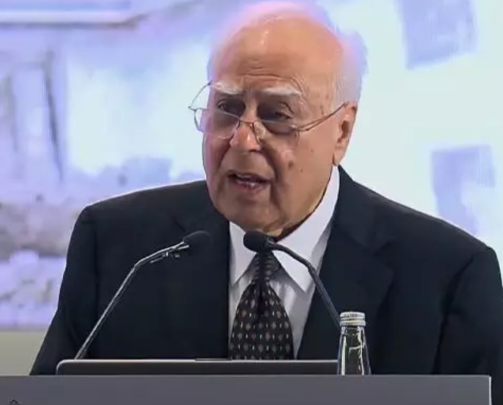
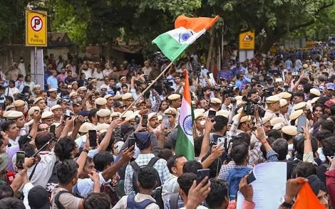

नवी दिल्ली
कॉकरोच जनता पार्टी (CJP) चे प्रवक्ते आशुतोष रांका यांनी बुधवारी इशारा दिला आहे की, सरकारने आंदोलकांच्या मागण्या त्वरित मान्य न केल्यास हे आंदोलन अधिक तीव्र केले जाईल. ANI शी बोलताना रांका म्हणाले की, जर सरकारने मागण्या मान्य केल्या नाहीत, तर लाखो नागरिक दिल्लीत धडकतील; आणि "यावेळी आम्ही मागे हटणार नाही व शांत बसणार नाही."
मंगळवारी काँग्रेस नेते राहुल गांधी, प्रियंका गांधी आणि इतर नेत्यांना ताब्यात घेतल्याच्या निषेधार्थ देशभरात आंदोलनाचा भडका उडाला आहे. आसाम, केरळ, पश्चिम बंगाल, जम्मू-काश्मीर, महाराष्ट्र, कर्नाटक, हरियाणा आणि झारखंडसह अनेक राज्यांमध्ये काँग्रेस नेते व युवा कार्यकर्त्यांनी तीव्र निदर्शने केली. यापूर्वी मंगळवारी, CJP च्या सोमवारी काढण्यात आलेल्या मोर्चावर दिल्ली पोलिसांनी केलेल्या कारवाईचा निषेध करण्यासाठी राहुल गांधी, वायनाडच्या खासदार प्रियंका गांधी वाद्रा, दोन राज्यांचे मुख्यमंत्री आणि इतर नेत्यांसह पंतप्रधान निवासाबाहेर (७, लोक कल्याण मार्ग) आंदोलनासाठी पोहोचले होते. समाजवादी पार्टीचे प्रमुख अखिलेश यादव हेदेखील या आंदोलनात सहभागी झाले.
सुमारे तीन तासांनंतर पोलिसांनी विरोधी नेत्यांना बळजबरीने तिथून हटवून राहुल गांधी आणि इतर नेत्यांना संध्याकाळी ताब्यात घेतले. काही तासांनंतर त्यांची सुटका करण्यात आली, तर काही इतर खासदार व नेत्यांना 'किंग्जवे कॅम्प' पोलीस ठाण्यात नेऊन नंतर सोडून देण्यात आले.
दुसरीकडे, केंद्र सरकारच्या वतीने समेट घडवून आणण्याचे प्रयत्न सुरू असतानाच, केंद्रीय मंत्री जे. पी. नड्डा आणि जितेंद्र सिंह यांनी मंगळवारी संध्याकाळी मेदांता रुग्णालयात उपोषणकर्ते कार्यकर्ते सोनम वांगचुक यांची भेट घेतली. जितेंद्र सिंह यांनी पंतप्रधान निवासाबाहेर आंदोलन करणाऱ्या राहुल गांधी यांची भेट घेतल्यानंतर लगेचच वांगचुक यांची भेट घेतली.
दरम्यान, शिक्षण मंत्री धर्मेंद्र प्रधान यांच्या राजीनाम्याची मागणी ही 'राजकीय' असल्याचे सांगत सरकारने ती फेटाळून लावली आहे. वरिष्ठ सरकारी अधिकाऱ्यांनी दिलेल्या माहितीनुसार, NEET पेपर फुटीमागील त्रुटी दूर करण्यात आल्या असून NEET, CUET आणि JEE Main परीक्षांअंतर्गत प्रवेश प्रक्रिया सुरळीत सुरू आहे. सरकार या विषयावर संसदेत चर्चेसाठी पूर्णपणे तयार आहे, मात्र राजीनामा देण्याचा किंवा दबावाला बळी पडण्याचा प्रश्नच उद्भवत नाही.
दिल्लीत विद्यार्थ्यांवर झालेल्या कथित लाठीमार आणि अखिलेश यादव यांना ताब्यात घेतण्याच्या घटनेच्या निषेधार्थ मंगळवारी संध्याकाळी समाजवादी पार्टीच्या कार्यकर्त्यांनी केंद्र सरकारविरोधात निदर्शने केली. SP आमदार माता प्रसाद पांडे यांनी आरोप केला की, "भाजप सरकारचा लोकशाहीवर विश्वास उरलेला नाही. आंदोलन करणे आणि धरणे धरणे हा आमचा लोकशाही अधिकार आहे. परंतु हे सरकार लोकशाही प्रक्रियाच संपवू पाहत आहे."

• नवी दिल्ली •
ज्येष्ठ वकील कपिल सिब्बल यांनी मंगळवारी CJP (कॉकक्रोच जनता पार्टी) मोर्चामध्ये सहभागी झालेल्या विद्यार्थ्यांवर पोलिसांकडून झालेल्या कथित बळाच्या वापराचा तीव्र निषेध केला आहे. या निदर्शनादरम्यान आपले कर्मचारी जखमी झाल्याचा दावा दिल्ली पोलिसांनी केला असून, या दाव्याची आणि संपूर्ण प्रकरणाची त्वरित व स्वतंत्र चौकशी करण्याची मागणी सिब्बल यांनी केली आहे.
जर या प्रकरणाची स्वतंत्र चौकशी झाली नाही, तर पोलीस भविष्यात विद्यार्थ्यांवर हिंसाचार सुरू केल्याचा ठपका ठेवून त्यांच्यावर UAPA (बेकायदेशीर कृत्ये प्रतिबंधक कायदा) अंतर्गत गुन्हे दाखल करू शकतात, असा गंभीर इशाराही त्यांनी दिला. २०२० मधील CAA विरोधी दिल्ली निदर्शनांनंतर शांततापूर्ण आंदोलकांना ज्याप्रमाणे फौजदारी गुन्ह्यांमध्ये अडकवण्यात आले, तशीच पुनरावृत्ती येथे होऊ शकते, अशी भीती त्यांनी व्यक्त केली.
निःशस्त्र विद्यार्थी आणि आंदोलकांवर दिल्ली पोलिसांनी केलेल्या लाठीचार्जवर प्रश्नचिन्ह उपस्थित करत सिब्बल म्हणाले, "केवळ पेपरफुटी आणि प्रवेश परीक्षांमधील अनियमिततेचे मुद्दे उपस्थित केल्याबद्दल कोणतेही सरकार स्वतःच्याच नागरिकांवर अशी क्रूर कारवाई कशी करू शकते?"
ते पुढे म्हणाले, "जे सरकार ऐकत नाही, त्यांचे ऐकले जाऊ नये. जर मुलांना हिंसक व्हायचे असते, तर ज्या पद्धतीने पोलिसांनी सोनम वांगचुक यांना ताब्यात घेतले तेव्हाच ते हिंसक झाले असते. ते हिंसक नव्हते, मग तिथे दगड कोणी आणले, आणि ज्या ट्रक व व्हॅनचे नुकसान झाले, ती तिथे कोणी आणली? प्रथम याची चौकशी झाली पाहिजे."
काही दिवसांनंतर पोलीस कर्मचारी स्वतःच एफआयआर (FIR) दाखल करतील आणि दिल्ली दंगलीप्रमाणेच ज्यांना लक्ष्य करायचे आहे त्यांची नावे ते देतील, अशी भीती सिब्बल यांनी व्यक्त केली. त्यांच्या मते, त्यानंतर विद्यार्थ्यांवर UAPA आणि इतर कलमे लावली जातील आणि त्यांना तसेच त्यांच्या कुटुंबाला धडा शिकवण्यासाठी ३-४ वर्षे तुरुंगात डांबले जाईल.
या पार्श्वभूमीवर, सरकारने जखमी झालेल्या सर्व पोलीस अधिकाऱ्यांची नावे, त्यांना झालेल्या दुखापतीचा प्रकार आणि त्यांचे वैद्यकीय अहवाल जाहीर करावेत, अशी मागणी त्यांनी केली आहे. "पोलीस कर्मचाऱ्यांनी सांगितले की ते जखमी झाले आहेत. आपल्या देशातील मुलांच्या हातात लाठी किंवा इतर कोणतेही शस्त्र नसताना जखमी झालेल्या सर्व पोलिसांची नावे त्यांनी द्यावीत. रुग्णालयात ते कधी गेले, वैद्यकीय अहवाल काय आहेत, हे त्यांनी स्पष्ट करावे. जर वृत्तपत्रे केवळ १० पोलीस जखमी झाल्याचे सांगत असतील आणि पोलीस १०० चा आकडा देत असतील, तर त्यांनी सत्य सांगावे," असे सिब्बल यांनी स्पष्ट केले.
तसेच, मुख्य प्रवाहातील प्रसारमाध्यमांवरही सिब्बल यांनी सडकून टीका केली. आंदोलकांना भारतात नेपाळसारखी क्रांती हवी आहे, असा दावा करणाऱ्या माध्यमांची सरकारशी असलेली जवळीक लाजिरवाणी असल्याचे ते म्हणाले. "२०११ मधील भ्रष्टाचारविरोधी आंदोलनादरम्यान याच प्रसारमाध्यमांनी निदर्शनांना 'अरब स्प्रिंग' म्हटले होते आणि आज ते विद्यार्थ्यांच्या निदर्शनांना हिंसक ठरवत आहेत," असे त्यांनी नमूद केले.

• नवी दिल्ली •
आंदोलनाचे नेते म्हणतात की ते आपला प्रचार सुरूच ठेवतील, परंतु नवी दिल्लीतून पुन्हा मोर्चा काढणार नाहीत. भारतातील 'कॉकक्रोच मुव्हमेंट'च्या नेत्यांनी स्पष्ट केले आहे की ते सरकारविरोधात निदर्शने करत राहतील, परंतु नवी दिल्लीच्या रस्त्यांवरून आणखी मोर्चे काढणार नाहीत. संसदेवर मोर्चा काढण्याचा प्रयत्न करणाऱ्या १०,००० हून अधिक लोकांवर पोलिसांनी केलेल्या हिंसक कारवाईनंतर आपल्या समर्थकांच्या सुरक्षेच्या चिंतेपोटी त्यांनी हा निर्णय घेतला आहे.
"आम्ही पुन्हा मोर्चा काढणार नाही कारण पोलीस तरुणांना पुन्हा दुखापत करतील," असे कॉकक्रोच जनता पार्टीचे (CJP) संस्थापक अभिजीत दिपके यांनी मंगळवारी एका पत्रकार परिषदेत सांगितले. सोमवारी झालेल्या मोर्चादरम्यान पोलिसांनी अश्रुधुराच्या नळकांड्या फोडल्या आणि कार्यकर्त्यांवर लाठीमार केला, ज्यामध्ये १५० आंदोलक जखमी झाले.
शिक्षणमंत्री धर्मेंद्र प्रधान यांच्या राजीनाम्याची मागणी हे आंदोलन लावून धरणार आहे. शिक्षण व्यवस्थेतील त्रुटींसाठी त्यांना जबाबदार धरले पाहिजे, असे त्यांचे म्हणणे आहे. परीक्षेचे पेपर फुटल्यामुळे २२ लाख विद्यार्थी डॉक्टरांना पुन्हा परीक्षा द्यावी लागली, ज्याच्या नैराश्यातून किमान १२ विद्यार्थ्यांनी आत्महत्या केली. या पेपरफुटीनंतर आत्महत्या केलेल्या विद्यार्थ्यांच्या प्रत्येक कुटुंबाला १ कोटी रुपये ($१०४,०००) नुकसानभरपाई द्यावी अशी CJP ची मागणी आहे. "आम्ही थांबणार नाही. प्रधान यांना बडतर्फ केले पाहिजे," असे CJP चे आशुतोष रांका म्हणाले.
विरोधी पक्षनेते राहुल गांधी आणि त्यांची बहीण प्रियांका गांधी यांनी भारतीय राष्ट्रीय काँग्रेस पक्षाच्या सदस्यांसह पंतप्रधान नरेंद्र मोदी यांच्या निवासस्थानाबाहेर निदर्शने केली, असे पक्षाने शेअर केलेल्या व्हिडिओंमध्ये मंगळवारी दिसले. "काल तरुण विद्यार्थ्यांवर झालेल्या अत्याचाराबद्दल पंतप्रधान मोदींना जाब विचारण्यासाठी आम्ही त्यांच्या घरापर्यंत मोर्चा काढला आहे," असे राहुल गांधी यांनी X वर पोस्ट केले.
अॅम्नेस्टी इंटरनॅशनल या मानवाधिकार गटाने सोमवारी रात्री उशिरा एका निवेदनात म्हटले आहे की पोलिसांच्या कारवाईतून "भारतात शांततापूर्ण असहमती कशी दडपली जात आहे" हे दिसून येते. उत्तर प्रदेशातील आंदोलक साहिल सिंग यांनी रॉयटर्स या वृत्तसंस्थेला सांगितले, "त्यांनी आम्हाला बेदम मारहाण केली आणि आमच्या निषेध स्थळाचे नुकसान केले. प्रधान यांच्या राजीनाम्याने जबाबदारी निश्चित व्हावी अशी आमची इच्छा आहे."
सोमवारी मोर्चा काढणाऱ्या आंदोलकांची संख्या अपेक्षेपेक्षा खूप जास्त होती. ५९ वर्षीय ज्येष्ठ कार्यकर्ते सोनम वांगचुक, जे CJP च्या समर्थनार्थ तीन आठवड्यांपासून उपोषणावर होते, त्यांना पोलिसांनी ताब्यात घेऊन त्यांच्या इच्छेविरुद्ध रुग्णालयात दाखल केले. या घटनेनंतर लोकांमध्ये मोठा संताप उसळला होता. 'बार अँड बेंच' या कायदेशीर वृत्तसंस्थेनुसार, वांगचुक यांना "बेकायदेशीरपणे ताब्यात" ठेवले असल्याचा आरोप करत त्यांच्या पत्नीने न्यायालयात धाव घेतल्यानंतर, दिल्ली उच्च न्यायालयाने मंगळवारी निर्णय दिला की वांगचुक यांना सरकारी रुग्णालयातून खाजगी आरोग्य सुविधेमध्ये हलवता येईल.
मंगळवारी सकाळी नवी दिल्लीतील जंतरमंतर येथील CJP च्या निषेध स्थळावर सुमारे २०० आंदोलक जमा झाले आणि मान्सूनच्या पावसात त्यांनी घोषणाबाजी केली. निमलष्करी दलाचे जवान भारताच्या राजधानीच्या मध्यवर्ती भागात गस्त घालत होते आणि बॅरिकेड्स लावून वाहतूक नियंत्रित करण्यात आली होती.
दिल्ली पोलिसांनी सांगितले की सोमवारी झालेल्या संघर्षात सुमारे १८० लोक (६० आंदोलक आणि ११८ सुरक्षा आणि पोलीस कर्मचारी) जखमी झाले. पोलिसांनी असेही सांगितले की ७० आंदोलकांना ताब्यात घेण्यात आले असून त्यांच्यावर कायदेशीर कारवाई केली जाईल. अनेक व्हिडिओंमध्ये पोलीस आंदोलकांवर हल्ला करताना दिसत आहेत, परंतु मोर्चा काढणाऱ्यांकडून कोणताही हिंसाचार झाल्याचे एकही फुटेज समोर आलेले नाही.
CJP आणि त्यांच्या समर्थकांना आशा आहे की ते सध्याची परिस्थिती बदलू शकतील. सोमवारी एका प्रतिनिधीने सांगितले की एका केंद्रीय मंत्र्याने त्यांच्या मागण्यांवर सरकार विचार करेल असे आश्वासन दिले आहे. मंगळवारी, संसदीय कार्य मंत्री किरेन रिजिजू म्हणाले: "मला वाटते की जेव्हा चर्चा योग्य दिशेने सुरू असते, तेव्हा वातावरण बिघडू नये."
CJP ची मोहीम सुरुवातीला सरकारची खिल्ली उडवणाऱ्या व्हायरल व्यंग्यात्मक मीम्सद्वारे ऑनलाइन सुरू झाली होती आणि अल्पावधीतच सोशल मीडियावर त्यांचे लाखो फॉलोअर्स झाले. सोमवारी झालेल्या मोर्चातून हे सिद्ध झाले की, आता या मोहिमेचे रूपांतर हजारो लोकांना रस्त्यावर उतरवू शकणाऱ्या मोठ्या चळवळीत झाले आहे. भारताच्या सर्वोच्च न्यायालयाच्या मुख्य न्यायाधीशांनी काही बेरोजगार तरुणांची तुलना "झुरळांशी" (cockroaches) केल्यानंतर, आंदोलकांनी हाच अपमान आपल्या चळवळीचे नाव म्हणून स्वीकारला.
• पुणे •
पुण्याचे युवा वैज्ञानिक डॉ. सौमित्र आठवले यांची अमेरिकन केमिकल सोसायटी च्या अधिकृत वृत्तमासिक केमिकल अँड इंजिनिअरिंग न्यूज (C&EN) तर्फे जाहीर करण्यात आलेल्या जागतिक पातळीवरील प्रतिष्ठित "टॅलंटेड १२" या जागतिक मानाच्या यादीत निवड झाली आहे. या वर्षी निवड झालेल्या १२ युवा वैज्ञानिकांमध्ये एकमेव भारतीय म्हणून डॉ. आठवले यांचा समावेश आहे.
"टॅलंटेड १२" हा उपक्रम रसायनशास्त्र आणि संबंधित विज्ञान शाखांमध्ये उल्लेखनीय संशोधन करणाऱ्या तसेच जागतिक स्तरावरील महत्त्वाच्या समस्यांवर नाविन्यपूर्ण उपाय सुचविणाऱ्या १२ युवा वैज्ञानिकांची दरवर्षी निवड करण्यासाठी राबविला जातो. यंदा जगभरातून सुमारे ५४० नामांकने प्राप्त झाली होती. त्यातून केवळ १२ वैज्ञानिकांची निवड करण्यात आली असून त्यामध्ये डॉ. सौमित्र आठवले यांचा समावेश झाला आहे.
निवड झालेल्या वैज्ञानिकांच्या संशोधनाची माहिती आणि त्यांची प्रोफाईल केमिकल अँड इंजिनिअरिंग न्यूज च्या विशेष अंकात प्रसिद्ध केली जाते. या विशेषांकाला जागतिक स्तरावर शैक्षणिक, औद्योगिक आणि संशोधन क्षेत्रात विशेष मान्यता असून त्यातील निवड ही युवा संशोधकांसाठी अत्यंत प्रतिष्ठेची मानली जाते.
डॉ. सौमित्र आठवले हे सेंद्रिय रसायनशास्त्र आणि जैवउत्प्रेरक या क्षेत्रातील संशोधक असून सध्या युनिव्हर्सिटी ऑफ कॅलिफोर्निया ऍट लॉस एंजेलिस येथे प्राध्यापक म्हणून कार्यरत आहेत. त्यांनी आणि त्यांच्या संशोधन गटाने लोहयुक्त एन्झाइम्स विकसित करून रसायनशास्त्रातील नवीन, कार्यक्षम आणि पर्यावरणपूरक अभिक्रिया घडवून आणण्याचे महत्त्वपूर्ण संशोधन केले आहे.
या यशाबद्दल प्रतिक्रिया व्यक्त करताना डॉ. सौमित्र आठवले म्हणाले, "विज्ञानातील मूलभूत प्रश्नांची उत्तरे शोधण्याची जिज्ञासा हीच माझ्या संशोधनामागील खरी प्रेरणा आहे. विज्ञानाच्या माध्यमातून समाजासाठी उपयुक्त ठरतील अशा संकल्पना आणि तंत्रज्ञान विकसित करण्यासाठी सातत्याने प्रयत्न करत राहणार आहे."
• पुणे •
न्यूटन स्कूल ऑफ टेक्नॉलॉजी - एडीवायपीयू (ADYPU) पुणे येथील कॉम्प्युटर सायन्स आणि आर्टिफिशियल इंटेलिजन्स (एआय) शाखेचा प्रथम वर्षाचा विद्यार्थी, मानस संधू याची नॉर्वेमधील ट्रोम्सो येथे होणाऱ्या ASEFYLS 2026 आणि आर्क्टिक लीडरशिप ट्रेनिंग कार्यक्रमासाठी निवड झाली आहे.
पुणे, महाराष्ट्र | 1 जुलै 2026 - पुण्यातील न्यूटन स्कूल ऑफ टेक्नॉलॉजी - एडीवायपीयू (ADYPU) येथे कॉम्प्युटर सायन्स आणि आर्टिफिशियल इंटेलिजन्स (एआय) शाखेत प्रथम वर्षात शिक्षण घेणारा मानस संधू याची आशिया-युरोप फाऊंडेशन (ASEF) च्या ASEFYLS 2026 कॅपॅसिटी ट्रेनिंग आणि नॉर्वेतील ट्रोम्सो (Tromso) येथे होणाऱ्या आर्क्टिक लीडरशिप ट्रेनिंग कार्यक्रमासाठी एएसईएफ लीडर 2026 म्हणून निवड झाली आहे. विशेष म्हणजे, यावर्षीच्या आर्क्टिक लीडरशिप ट्रेनिंग कार्यक्रमासाठी भारताचे प्रतिनिधित्व करणारा मानस हा भारतातील एकमेव विद्यार्थी आणि युवा नेता ठरला आहे.
या कार्यक्रमात आशिया आणि युरोपमधील निवडक युवा नेते एकत्र येतात. येथे नेतृत्व, धोरणांवरील चर्चा, शाश्वत विकास, भविष्यातील संधी, तंत्रज्ञान आणि विविध देशांतील संस्कृतींमधील सहकार्य अशा विषयांवर चर्चा व प्रशिक्षण दिले जाते. या कार्यक्रमासाठी 52 देशांतून 3,600 हून अधिक अर्ज प्राप्त झाले होते. अशा मोठ्या स्पर्धेत मानस संधूची निवड होणे ही त्याच्यासाठी आणि भारतासाठी मोठी आंतरराष्ट्रीय मान्यता मानली जात आहे.
मानस संधूने शिक्षण, तंत्रज्ञान, क्रीडा, संगीत आणि समाजसेवा या विविध क्षेत्रांमध्ये उल्लेखनीय कामगिरी केली आहे. तो राष्ट्रीय स्तरावरील स्केटिंगपटू, प्रशिक्षित संगीतकार, काउंटर स्ट्राईक (CS) ई-स्पोर्ट्स खेळाडू असून फॉरेंजर्स फाउंडेशन या युवा नेतृत्वाखालील संस्थेचा संस्थापक सदस्य आहे. त्याच्या योगदानामुळे या संस्थेशी 800 हून अधिक स्वयंसेवक जोडले गेले आहेत.